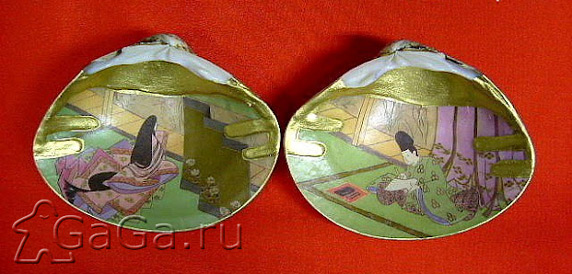

Memory - игра на память
Игра Memory более известна в России под названием Найди пару, в которую многие из вас наверняка играли, или, по меньшей мере, слышали о ней. И это не удивительно, так как она уже успела завоевать свою популярность практически во всех странах мира.
Мемори представляет собой набор из пар одинаковых карточек. Количество пар в наборе начинается, как правило, с двенадцати - версия для самых маленьких. А для тех, кто постарше, карточек больше, обычно раза в два-три.
История этой игры уходит своими корнями в Японию, когда она была принята у дворян в период Хэйан. Среди японской знати были очень популярны развлечения awase, что с японского означает "соединение". Основной их смысл заключался в том, что из нескольких факторов, указывающих на художественные и эстетические чувства, выбирался лучший. Среди этих развлечений существовало и kai-awase – игра в ракушки. Полный набор kai-awase состоит из 360 пар ракушек приблизительно одинаково размера (2,5-3 дюйма). Снаружи ракушка сохраняет свой первозданный вид, а внутри она тщательно вычищается и окрашивается. Каждая пара ракушек содержит один образ. И именно образ, поскольку порой рисунок одной створки гармонично дополняется рисунком другой. Внутри ракушек обычно изображены цветы, костюмы, поэтические образы, литературные персонажи и так далее, хотя в некоторых случаях они несли даже поэтические тексты, разделенные пополам между ракушками.

В эпоху Эдо игра носила аристократический характер, а предметы этой игры иногда служили у женщин в качестве приданного. В настоящее время Kai-awase до сих пор пользуется популярностью, хотя за пределы Японии она практически не выбралась.